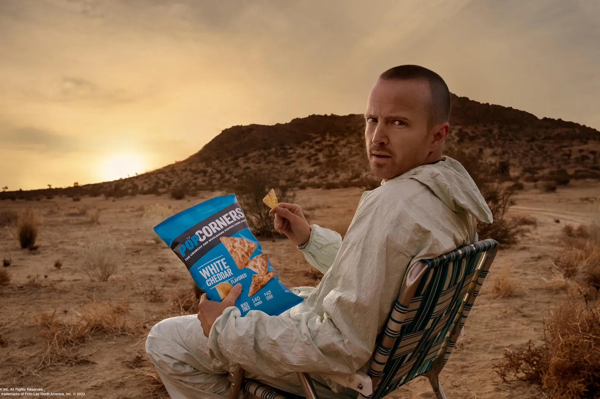

My list on the most mind blowing scenes in Breaking Bad
Number 1 - Jesse Pinkman and Walter White cooking "blue sky" crystal meth. This scene takes place in the massive lab Gus Fring built to cook meth, and he has ordered Jesse and Walter to do so.

Number 2 - Jesse's Pop Corners story arc, in the rare canceled episode, Jesse discovers his love of Pop Corners, which are so, tight, tight tight tight.
Number 3 - My name is Skyler White YO. Truly one of the scenes of all time, in this scene from the second episode of the entire series, Skyler White - Walter's wife, intimidates Jesse Pinkman - who she thinks is selling weed to Walter.

Don't forget, Mike is always watching. See you next time!